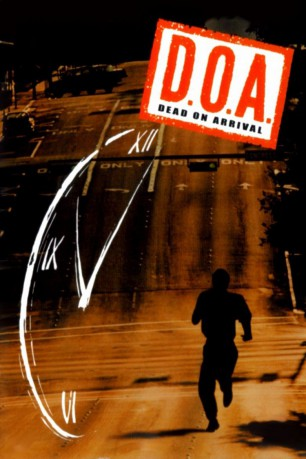

gesehen am 14.10.2016
gesehen am 14.10.2016Alternativ: D.O.A. gesehen am 14.10.2016
 
 IMDB-Wertung: 6.1 / 10
IMDB-Wertung: 6.1 / 10  Metascore:
Metascore: 
Remake des gleichnamigen Films von 1950 (deutscher Titel: Opfer der Unterwelt). Der Literaturprofessor Dexter Cornell wurde vergiftet und hat nur noch zwei Tage zu leben. Zusammen mit der Studentin Sidney, mit der er ein Verhältnis hat, macht er sich auf die Suche nach dem Täter.
Jahr: 1988
Dauer: 97 Minuten
FSK: 16
Land: USA Studio: Buena Vista PicturesTonspuren:
Untertitel:
Auflösung: 1080p (1920x1040) Größe: 12595 MB
Regisseur: Annabel Jankel, Rocky Morton
Drehbuch: Jojo Moyes
Soundtrack:
Darsteller:
 Dennis Quaid als Dexter Cornell
Dennis Quaid als Dexter Cornell Meg Ryan als Sydney Fuller
Meg Ryan als Sydney Fuller Charlotte Rampling als Mrs. Fitzwaring
Charlotte Rampling als Mrs. Fitzwaring Daniel Stern als Hal Petersham
Daniel Stern als Hal Petersham Jane Kaczmarek als Gail Cornell
Jane Kaczmarek als Gail Cornell Christopher Neame als Bernard
Christopher Neame als Bernard Robert Knepper als Nicholas Lang
Robert Knepper als Nicholas Lang Jay Patterson als Graham Corey
Jay Patterson als Graham Corey Brion James als Detective Ulmer
Brion James als Detective Ulmer John Hawkes als Sloane
John Hawkes als Sloane Marco Perella als Cab Driver
Marco Perella als Cab Driver Gabriel Folse als Frat Jock #1
Gabriel Folse als Frat Jock #1 Jack Kehoe als Detective Brockton
Jack Kehoe als Detective BrocktonDatei: X:\1988\D.O.A. - Bei Ankunft Mord (1988, FSK16, 1920x1040).mkv seit 04.10.2016
Festplatte: HD 1987-1991
 Es gibt insgesamt 66 Filme in der Gruppe '1988'
Es gibt insgesamt 66 Filme in der Gruppe '1988'